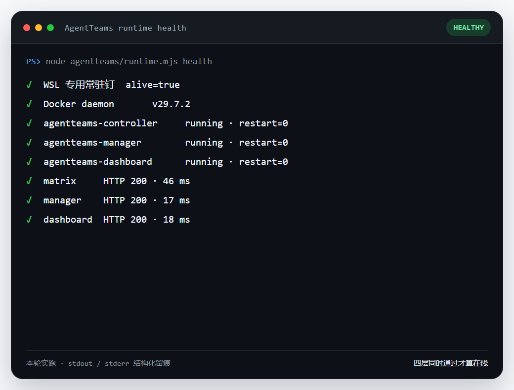
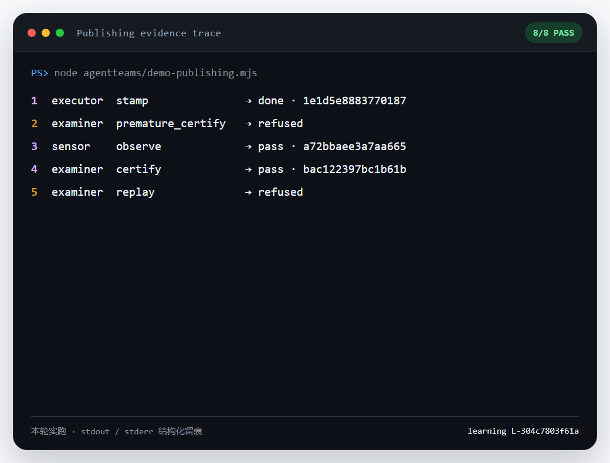
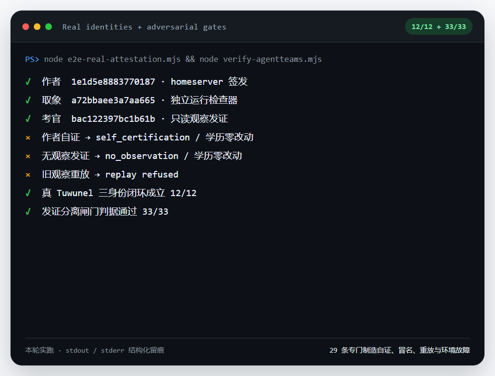
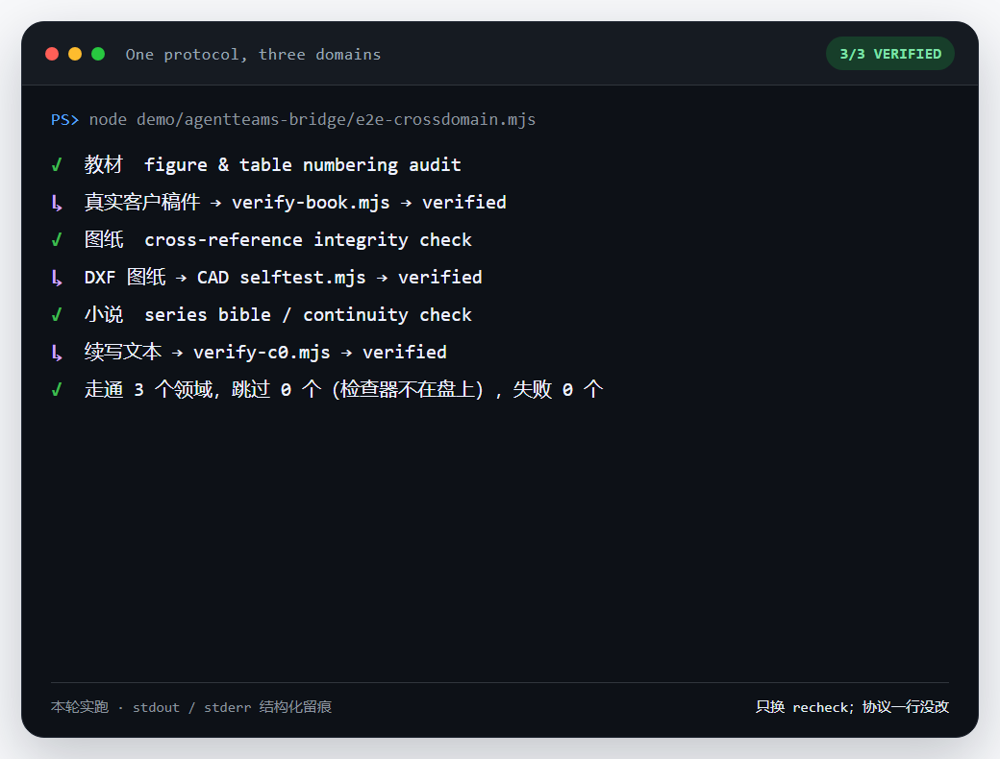

本象协议本身只回答"这份文件里有什么"。AgentTeams 是接在协议上的一层多智能体运行层：谁改的、谁看的、谁签的证，三个身份必须互不相同，且全程留痕可复核。下面四段都是实跑记录，标了实测日期——不是效果图。
健康检查同时看 WSL 常驻钉、Docker、三个容器状态、三个 HTTP 入口——任一层失败就判 unhealthy，不把"端口通"当成"服务好了"。

node agentteams/runtime.mjs health执行者登记候选、考官在没有观察记录时提前发证被拒、观察者补上观察、正式发证、把用过的观察拿去重放又被拒——成功和拒绝都进同一条台账，拒绝分支全程学历零改动。

node agentteams/demo-publishing.mjs绿灯不是只跑正例得到的：自证、冒名、重放观察、绕过考题都被专门设计的反向用例去撞，撞不过才算数。截图定格在扩容前的 33/33（29 条反向）那一版；套件在 2026-08-28 只增未减扩到了 50 条，口径以现在的仓库为准。

node agentteams/verify-agentteams.mjs这张截图直接呼应本站案例墙——xlsx、CAD、textbook、story 四个方言在协议层各自独立，但接到 AgentTeams 之后，发证闸门、台账格式、三身份分离规则完全共用一份代码，换领域只换 recheck 指向哪个检查器。第四格 RFP 合规矩阵还没做，如实留空，不进演示。

node demo/agentteams-bridge/e2e-crossdomain.mjs下面两个链接是原始会审记录的可视化回放，不是为本页重做的演示：多 Agent 协作监督面板 → · 真实任务协作链（含人工拒绝节点）→